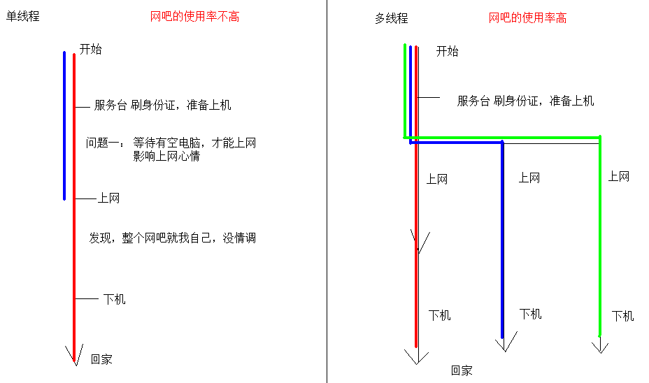
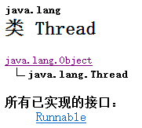
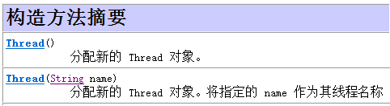
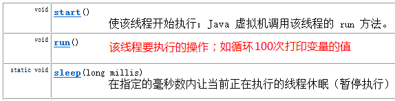
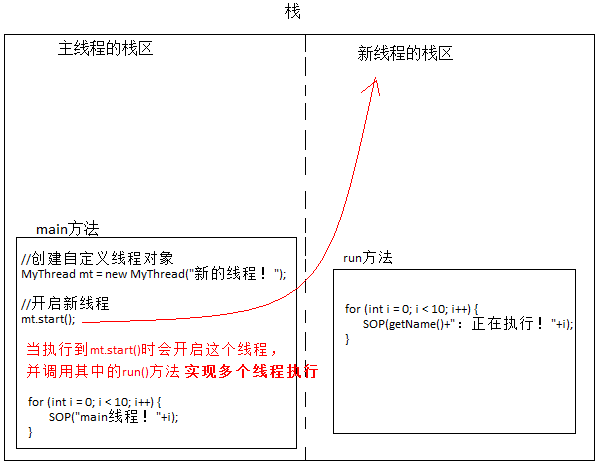
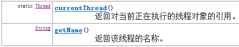
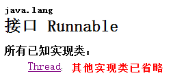
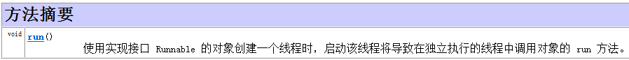
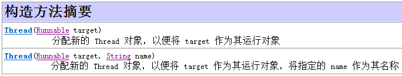
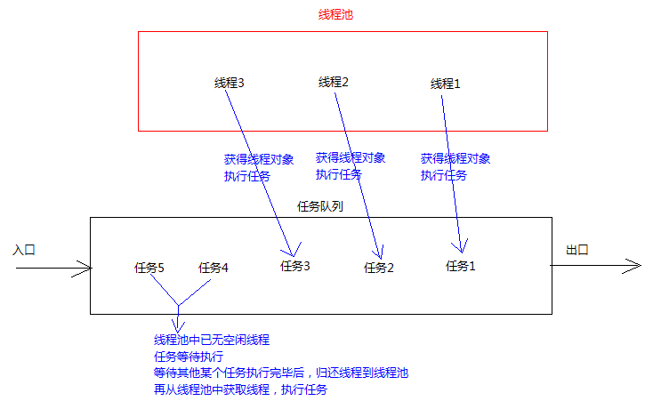

原文连接:https://www.cnblogs.com/liuhui0308/p/11657077.html
1. 多线程
1.1 多线程介绍
学习多线程之前，我们先要了解几个关于多线程有关的概念。
进程：进程指正在运行的程序。确切的来说，当一个程序进入内存运行，即变成一个进程，进程是处于运行过程中的程序，并且具有一定独立功能。
线程：线程是进程中的一个执行单元，负责当前进程中程序的执行，一个进程中至少有一个线程。一个进程中是可以有多个线程的，这个应用程序也可以称之为多线程程序。
简而言之：一个程序运行后至少有一个进程，一个进程中可以包含多个线程
Thread、线程创建、线程池1.png)
什么是多线程呢？即就是一个程序中有多个线程在同时执行。
通过下图来区别单线程程序与多线程程序的不同：
单线程程序：即，若有多个任务只能依次执行。当上一个任务执行结束后，下一个任务开始执行。如，去网吧上网，网吧只能让一个人上网，当这个人下机后，下一个人才能上网。
多线程程序：即，若有多个任务可以同时执行。如，去网吧上网，网吧能够让多个人同时上网。

1.2 程序运行原理
分时调度
所有线程轮流使用 CPU 的使用权，平均分配每个线程占用 CPU 的时间。
抢占式调度
优先让优先级高的线程使用 CPU，如果线程的优先级相同，那么会随机选择一个(线程随机性)，Java使用的为抢占式调度。
1.2.1 抢占式调度详解
大部分操作系统都支持多进程并发运行，现在的操作系统几乎都支持同时运行多个程序。比如：现在我们上课一边使用编辑器，一边使用录屏软件，同时还开着画图板，dos窗口等软件。此时，这些程序是在同时运行，”感觉这些软件好像在同一时刻运行着“。
实际上，CPU(中央处理器)使用抢占式调度模式在多个线程间进行着高速的切换。对于CPU的一个核而言，某个时刻，只能执行一个线程，而 CPU的在多个线程间切换速度相对我们的感觉要快，看上去就是在同一时刻运行。
其实，多线程程序并不能提高程序的运行速度，但能够提高程序运行效率，让CPU的使用率更高。
1.3 主线程
回想我们以前学习中写过的代码，当我们在dos命令行中输入java空格类名回车后，启动JVM，并且加载对应的class文件。虚拟机并会从main方法开始执行我们的程序代码，一直把main方法的代码执行结束。如果在执行过程遇到循环时间比较长的代码，那么在循环之后的其他代码是不会被马上执行的。如下代码演示：
class Demo{
String name;
Demo(String name){
this.name = name;
}
void show() {
for (int i=1;i<=10000 ;i++ ) {
System.out.println("name="+name+",i="+i);
}
}
}
class ThreadDemo {
public static void main(String[] args) {
Demo d = new Demo("小强");
Demo d2 = new Demo("旺财");
d.show();
d2.show();
System.out.println("Hello World!");
}
}若在上述代码中show方法中的循环执行次数很多，这时在d.show();下面的代码是不会马上执行的，并且在dos窗口会看到不停的输出name=小强,i=值，这样的语句。为什么会这样呢？
原因是：jvm启动后，必然有一个执行路径(线程)从main方法开始的，一直执行到main方法结束，这个线程在java中称之为主线程。当程序的主线程执行时，如果遇到了循环而导致程序在指定位置停留时间过长，则无法马上执行下面的程序，需要等待循环结束后能够执行。
那么，能否实现一个主线程负责执行其中一个循环，再由另一个线程负责其他代码的执行，最终实现多部分代码同时执行的效果？
能够实现同时执行，通过Java中的多线程技术来解决该问题。
1.4 Thread类
该如何创建线程呢？通过API中搜索，查到Thread类。通过阅读Thread类中的描述。Thread是程序中的执行线程。Java 虚拟机允许应用程序并发地运行多个执行线程。

构造方法

常用方法

继续阅读，发现创建新执行线程有两种方法。
一种方法是将类声明为 Thread 的子类。该子类应重写 Thread 类的 run 方法。创建对象，开启线程。run方法相当于其他线程的main方法。
另一种方法是声明一个实现 Runnable 接口的类。该类然后实现 run 方法。然后创建Runnable的子类对象，传入到某个线程的构造方法中，开启线程。
1.5 创建线程方式一继承Thread类
创建线程的步骤：
1 定义一个类继承Thread。
2 重写run方法。
3 创建子类对象，就是创建线程对象。
4 调用start方法，开启线程并让线程执行，同时还会告诉jvm去调用run方法。
测试类
public class Demo01 {
public static void main(String[] args) {
//创建自定义线程对象
MyThread mt = new MyThread("新的线程！");
//开启新线程
mt.start();
//在主方法中执行for循环
for (int i = 0; i < 10; i++) {
System.out.println("main线程！"+i);
}
}
}自定义线程类
public class MyThread extends Thread {
//定义指定线程名称的构造方法
public MyThread(String name) {
//调用父类的String参数的构造方法，指定线程的名称
super(name);
}
/**
* 重写run方法，完成该线程执行的逻辑
*/
@Override
public void run() {
for (int i = 0; i < 10; i++) {
System.out.println(getName()+"：正在执行！"+i);
}
}
}思考：线程对象调用 run方法和调用start方法区别？
线程对象调用run方法不开启线程。仅是对象调用方法。线程对象调用start开启线程，并让jvm调用run方法在开启的线程中执行。
1.5.1 继承Thread类原理
我们为什么要继承Thread类，并调用其的start方法才能开启线程呢？
继承Thread类：因为Thread类用来描述线程，具备线程应该有功能。那为什么不直接创建Thread类的对象呢？如下代码：
Thread t1 = new Thread();
t1.start();//这样做没有错，但是该start调用的是Thread类中的run方法，而这个run方法没有做什么事情，更重要的是这个run方法中并没有定义我们需要让线程执行的代码。创建线程的目的是什么？
是为了建立程序单独的执行路径，让多部分代码实现同时执行。也就是说线程创建并执行需要给定线程要执行的任务。
对于之前所讲的主线程，它的任务定义在main函数中。自定义线程需要执行的任务都定义在run方法中。
Thread类run方法中的任务并不是我们所需要的，只有重写这个run方法。既然Thread类已经定义了线程任务的编写位置（run方法），那么只要在编写位置（run方法）中定义任务代码即可。所以进行了重写run方法动作。
1.5.2 多线程的内存图解
多线程执行时，到底在内存中是如何运行的呢？
以上个程序为例，进行图解说明：
多线程执行时，在栈内存中，其实每一个执行线程都有一片自己所属的栈内存空间。进行方法的压栈和弹栈。
当执行线程的任务结束了，线程自动在栈内存中释放了。但是当所有的执行线程都结束了，那么进程就结束了。
1.5.3 获取线程名称
开启的线程都会有自己的独立运行栈内存，那么这些运行的线程的名字是什么呢？该如何获取呢？既然是线程的名字，按照面向对象的特点，是哪个对象的属性和谁的功能，那么我们就去找那个对象就可以了。查阅Thread类的API文档发现有个方法是获取当前正在运行的线程对象。还有个方法是获取当前线程对象的名称。既然找到了，我们就可以试试。

Thread.currentThread()获取当前线程对象
Thread.currentThread().getName();获取当前线程对象的名称
class MyThread extends Thread { //继承Thread
MyThread(String name){
super(name);
}
//复写其中的run方法
public void run(){
for (int i=1;i<=20 ;i++ ){
System.out.println(Thread.currentThread().getName()+",i="+i);
}
}
}
class ThreadDemo {
public static void main(String[] args) {
//创建两个线程任务
MyThread d = new MyThread();
MyThread d2 = new MyThread();
d.run();//没有开启新线程, 在主线程调用run方法
d2.start();//开启一个新线程，新线程调用run方法
}
}通过结果观察，原来主线程的名称：main；自定义的线程：Thread-0，线程多个时，数字顺延。如Thread-1......
进行多线程编程时，不要忘记了Java程序运行是从主线程开始，main方法就是主线程的线程执行内容。
1.6 创建线程方式—实现Runnable接口
创建线程的另一种方法是声明实现 Runnable 接口的类。该类然后实现 run 方法。然后创建Runnable的子类对象，传入到某个线程的构造方法中，开启线程。
为何要实现Runnable接口，Runable是啥玩意呢？继续API搜索。
查看Runnable接口说明文档：Runnable接口用来指定每个线程要执行的任务。包含了一个 run 的无参数抽象方法，需要由接口实现类重写该方法。

接口中的方法

Thread类构造方法

创建线程的步骤。
1、定义类实现Runnable接口。
2、覆盖接口中的run方法。。
3、创建Thread类的对象
4、将Runnable接口的子类对象作为参数传递给Thread类的构造函数。
5、调用Thread类的start方法开启线程。
代码演示：
public class Demo02 {
public static void main(String[] args) {
//创建线程执行目标类对象
Runnable runn = new MyRunnable();
//将Runnable接口的子类对象作为参数传递给Thread类的构造函数
Thread thread = new Thread(runn);
Thread thread2 = new Thread(runn);
//开启线程
thread.start();
thread2.start();
for (int i = 0; i < 10; i++) {
System.out.println("main线程：正在执行！"+i);
}
}
}自定义线程执行任务类
public class MyRunnable implements Runnable{
//定义线程要执行的run方法逻辑
@Override
public void run() {
for (int i = 0; i < 10; i++) {
System.out.println("我的线程：正在执行！"+i);
}
}
}1.6.1 实现Runnable的原理
为什么需要定一个类去实现Runnable接口呢？继承Thread类和实现Runnable接口有啥区别呢？
实现Runnable接口，避免了继承Thread类的单继承局限性。覆盖Runnable接口中的run方法，将线程任务代码定义到run方法中。
创建Thread类的对象，只有创建Thread类的对象才可以创建线程。线程任务已被封装到Runnable接口的run方法中，而这个run方法所属于Runnable接口的子类对象，所以将这个子类对象作为参数传递给Thread的构造函数，这样，线程对象创建时就可以明确要运行的线程的任务。
1.6.2 实现Runnable的好处
第二种方式实现Runnable接口避免了单继承的局限性，所以较为常用。实现Runnable接口的方式，更加的符合面向对象，线程分为两部分，一部分线程对象，一部分线程任务。继承Thread类，线程对象和线程任务耦合在一起。一旦创建Thread类的子类对象，既是线程对象，有又有线程任务。实现runnable接口，将线程任务单独分离出来封装成对象，类型就是Runnable接口类型。Runnable接口对线程对象和线程任务进行解耦。
1.7 线程的匿名内部类使用
使用线程的内匿名内部类方式，可以方便的实现每个线程执行不同的线程任务操作。
方式1：创建线程对象时，直接重写Thread类中的run方法
new Thread() {
public void run() {
for (int x = 0; x < 40; x++) {
System.out.println(Thread.currentThread().getName()
+ "...X...." + x);
}
}
}.start();方式2：使用匿名内部类的方式实现Runnable接口，重新Runnable接口中的run方法
Runnable r = new Runnable() {
public void run() {
for (int x = 0; x < 40; x++) {
System.out.println(Thread.currentThread().getName()
+ "...Y...." + x);
}
}
};
new Thread(r).start();2. 线程池
2.1 线程池概念
线程池，其实就是一个容纳多个线程的容器，其中的线程可以反复使用，省去了频繁创建线程对象的操作，无需反复创建线程而消耗过多资源。

我们详细的解释一下为什么要使用线程池？
在java中，如果每个请求到达就创建一个新线程，开销是相当大的。在实际使用中，创建和销毁线程花费的时间和消耗的系统资源都相当大，甚至可能要比在处理实际的用户请求的时间和资源要多的多。除了创建和销毁线程的开销之外，活动的线程也需要消耗系统资源。如果在一个jvm里创建太多的线程，可能会使系统由于过度消耗内存或“切换过度”而导致系统资源不足。为了防止资源不足，需要采取一些办法来限制任何给定时刻处理的请求数目，尽可能减少创建和销毁线程的次数，特别是一些资源耗费比较大的线程的创建和销毁，尽量利用已有对象来进行服务。
线程池主要用来解决线程生命周期开销问题和资源不足问题。通过对多个任务重复使用线程，线程创建的开销就被分摊到了多个任务上了，而且由于在请求到达时线程已经存在，所以消除了线程创建所带来的延迟。这样，就可以立即为请求服务，使用应用程序响应更快。另外，通过适当的调整线程中的线程数目可以防止出现资源不足的情况。
2.2 使用线程池方式--Runnable接口
通常，线程池都是通过线程池工厂创建，再调用线程池中的方法获取线程，再通过线程去执行任务方法。
Executors：线程池创建工厂类
public static ExecutorService newFixedThreadPool(int nThreads)：返回线程池对象
ExecutorService：线程池类
Future<?> submit(Runnable task)：获取线程池中的某一个线程对象，并执行
Future接口：用来记录线程任务执行完毕后产生的结果。线程池创建与使用
使用线程池中线程对象的步骤：
创建线程池对象
创建Runnable接口子类对象
提交Runnable接口子类对象
关闭线程池
代码演示：
public class ThreadPoolDemo {
public static void main(String[] args) {
//创建线程池对象
ExecutorService service = Executors.newFixedThreadPool(2);//包含2个线程对象
//创建Runnable实例对象
MyRunnable r = new MyRunnable();
//自己创建线程对象的方式
//Thread t = new Thread(r);
//t.start(); ---> 调用MyRunnable中的run()
//从线程池中获取线程对象,然后调用MyRunnable中的run()
service.submit(r);
//再获取个线程对象，调用MyRunnable中的run()
service.submit(r);
service.submit(r);
//注意：submit方法调用结束后，程序并不终止，是因为线程池控制了线程的关闭。将使用完的线程又归还到了线程池中
//关闭线程池
//service.shutdown();
}
}Runnable接口实现类
public class MyRunnable implements Runnable {
@Override
public void run() {
System.out.println("我要一个教练");
try {
Thread.sleep(2000);
} catch (InterruptedException e) {
e.printStackTrace();
}
System.out.println("教练来了： " +Thread.currentThread().getName());
System.out.println("教我游泳,交完后，教练回到了游泳池");
}
}2.3 使用线程池方式—Callable接口
Callable接口：与Runnable接口功能相似，用来指定线程的任务。其中的call()方法，用来返回线程任务执行完毕后的结果，call方法可抛出异常。
ExecutorService：线程池类
<T> Future<T> submit(Callable<T> task)：获取线程池中的某一个线程对象，并执行线程中的call()方法
Future接口：用来记录线程任务执行完毕后产生的结果。线程池创建与使用
使用线程池中线程对象的步骤：
创建线程池对象
创建Callable接口子类对象
提交Callable接口子类对象
关闭线程池
代码演示：
public class ThreadPoolDemo {
public static void main(String[] args) {
//创建线程池对象
ExecutorService service = Executors.newFixedThreadPool(2);//包含2个线程对象
//创建Callable对象
MyCallable c = new MyCallable();
//从线程池中获取线程对象,然后调用MyRunnable中的run()
service.submit(c);
//再获取个教练
service.submit(c);
service.submit(c);
//注意：submit方法调用结束后，程序并不终止，是因为线程池控制了线程的关闭。将使用完的线程又归还到了线程池中
//关闭线程池
//service.shutdown();
}
}Callable接口实现类,call方法可抛出异常、返回线程任务执行完毕后的结果
public class MyCallable implements Callable {
@Override
public Object call() throws Exception {
System.out.println("我要一个教练:call");
Thread.sleep(2000);
System.out.println("教练来了： " +Thread.currentThread().getName());
System.out.println("教我游泳,交完后,教练回到了游泳池");
return null;
}
}2.4 线程池练习：返回两个数相加的结果
要求：通过线程池中的线程对象，使用Callable接口完成两个数求和操作
Future接口：用来记录线程任务执行完毕后产生的结果。线程池创建与使用
V get() 获取Future对象中封装的数据结果
代码演示：
public class ThreadPoolDemo {
public static void main(String[] args) throws InterruptedException, ExecutionException {
//创建线程池对象
ExecutorService threadPool = Executors.newFixedThreadPool(2);
//创建一个Callable接口子类对象
//MyCallable c = new MyCallable();
MyCallable c = new MyCallable(100, 200);
MyCallable c2 = new MyCallable(10, 20);
//获取线程池中的线程，调用Callable接口子类对象中的call()方法, 完成求和操作
//<Integer> Future<Integer> submit(Callable<Integer> task)
// Future 结果对象
Future<Integer> result = threadPool.submit(c);
//此 Future 的 get 方法所返回的结果类型
Integer sum = result.get();
System.out.println("sum=" + sum);
//再演示
result = threadPool.submit(c2);
sum = result.get();
System.out.println("sum=" + sum);
//关闭线程池(可以不关闭)
}
}Callable接口实现类
public class MyCallable implements Callable<Integer> {
//成员变量
int x = 5;
int y = 3;
//构造方法
public MyCallable(){
}
public MyCallable(int x, int y){
this.x = x;
this.y = y;
}
@Override
public Integer call() throws Exception {
return x+y;
}
}